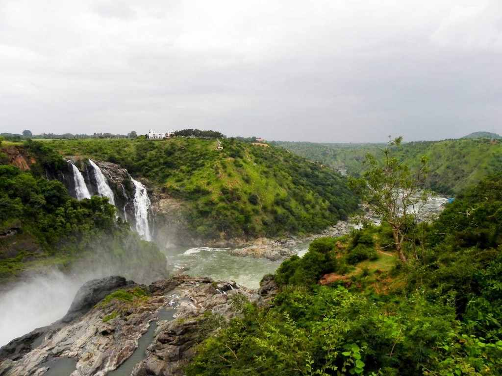

Palakkad
Palakkad District, in the southeastern part of the former Malabar district, is one of the 14 districts of the South Indian state of Kerala. It is located right in the middle of the state. Also, it is the largest district in Kerala since 2006. The city of Palakkad is the district headquarters. Palakkad is bordered on the northwest by the Malappuram District, on the southwest by the Thrissur District, on the northeast by Nilgiris District, and on the east by Coimbatore district of Tamil Nadu. The district is 24.4% urbanized according to the census of 2011. The district is nicknamed "the granary of Kerala". Palakkad is the gateway to Kerala due to the presence of the Palakkad Gap, in the Western Ghats. The total area of the district is 4,480 km2 (1,730 sq mi) which is 11.5% of the state's area which makes it the largest district of Kerala.
Nelliyampathy
Nelliyampathy is a virgin hill station located in Palakkad district of Kerala. Nelliyampathy is blessed with lush dense rain-forests with number of wild animals like elephants, hill squirrels, deers and bison. Located above 467 m above sea-level, it is well known for its sprawling tea gardens, coffee, cardamom and orange plantations. The largest perennial multi crop organic farm in the world owned by Poabs-India has given this sleepy hill station, international repute. Several small waterfalls, streams and rocky hill ranges also add beauty to this wonderful summer destination.
Palakkad Fort

Palakkad Fort is an old fort situated in the heart of Palakkad town of Kerala state, southern India. It was recaptured and rebuilt grandly by Sultan Hyder Ali in 1766 A.D and remains one of the best-preserved forts in Kerala. The Palakkad Fort is said to have existed from very ancient times but believed to be constructed in the present form in 1766 A.D, but little is known of its early history. The local ruler, Palakkad Achchan, was originally a tributary of the Zamorin but had become independent before the beginning of the eighteenth century. In 1757 he sent a deputation to Hyder Ali seeking help against an invasion threatened by the Zamorin. Hyder Ali seized upon the opportunity to gain possession of a strategically important location such as Palghat and from that time until 1790 the fort was continually in the hands of the Mysore Sultans or the British.